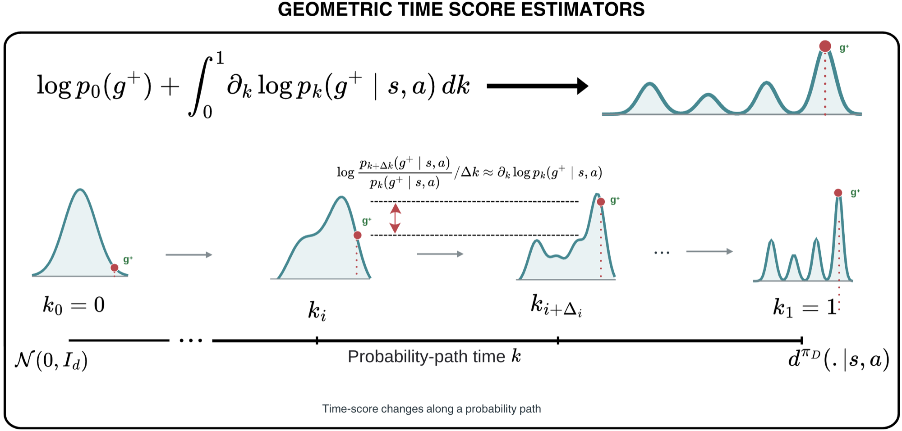
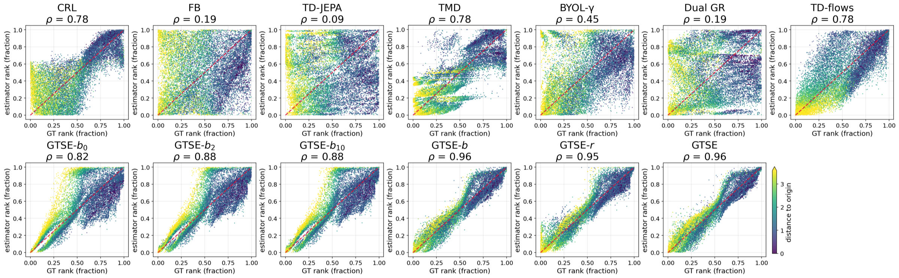
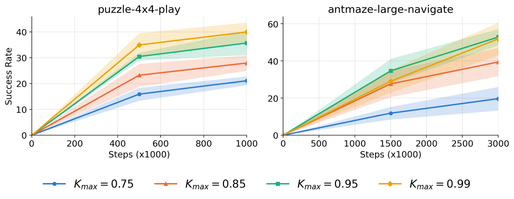
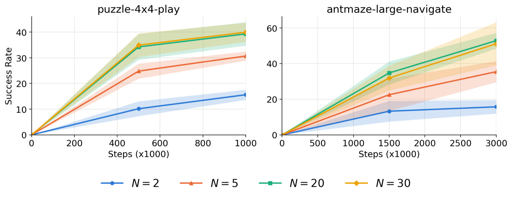

Geometric Time Score Estimators: Bridging Self-Predictive Representations and Generative Occupancy Models for Reinforcement Learning

The time score \(\partial_k \log p_k(g^+ \mid s, a)\) captures the instantaneous rate of change of the log-density of the occupancy measure along a probability path. Integrating it gives accurate occupancy density estimates for downstream control.
- Estimating the density of future outcomes under a policy's occupancy measure is central to RL. Self-predictive representations (CRL, FB, TD-JEPA, BYOL-\(\gamma\), ...) are the dominant approach, but we find they give surprisingly poor density estimates, even on simple MDPs.
- Generative occupancy models (e.g. TD-flows) produce accurate samples of future states, but are not trained to estimate densities, so their expressivity goes unused for control.
- We propose Geometric Time Score Estimators (GTSE): learn the time score of the occupancy measure along a probability path with temporal difference learning, and integrate it to recover the occupancy density.
- Under a bilinear parameterization, the time-score integral decomposes into an infinite sum of inner products of self-predictive representations, which explains GTSE's higher representational capacity. A variant, GTSE-\(r\), learns explicit state-action and goal representations.
- On OGBench locomotion and manipulation tasks, GTSE improves over state-of-the-art methods by 2× to 6× in goal-conditioned RL, and GTSE-\(r\) representations transfer to downstream reward-based RL.
We build a 5-step toy MDP in \(\mathbb{R}^2\) with a branching, multimodal occupancy measure and compare each method's predicted occupancy density against the ground-truth \(\log d^{\pi_D}\) over 50 goals and 300 state-action pairs per goal. Most baselines estimate it poorly. The best baselines (CRL, TMD, TD-flows) reach Spearman \(\rho = 0.78\); GTSE reaches \(\rho = 0.96\).

Normalized rank of estimated occupancy density vs. normalized rank of ground-truth \(\log d^{\pi_D}\) on the toy MDP (colored by distance of state from origin).
These errors carry over to control. On pointmaze-large-diverse, we measure \(\rho\) for nearby and far-away goals and the success rate with best-of-16 action selection. Baselines degrade on far goals and the best one (CRL) reaches 3% success. GTSE reaches 38%.
| CRL | FB | TD-JEPA | BYOL-γ | Dual GR | TMD | TD-flows | GTSE-b₀ | GTSE-b₂ | GTSE-b₁₀ | GTSE-b | GTSE-r | GTSE | |
|---|---|---|---|---|---|---|---|---|---|---|---|---|---|
| ρ (near) | 0.56 | 0.11 | 0.25 | 0.33 | −0.07 | 0.56 | 0.00 | 0.56 | 0.60 | 0.60 | 0.60 | 0.60 | 0.63 |
| ρ (far) | 0.14 | 0.00 | 0.08 | 0.16 | −0.09 | 0.30 | 0.05 | 0.50 | 0.51 | 0.52 | 0.53 | 0.52 | 0.55 |
| Success rate | 3±6 | 0±0 | 0±0 | 0±0 | 0±0 | 0±0 | 0±0 | 12±5 | 21±10 | 19±9 | 25±4 | 25±2 | 38±4 |
-
Occupancy modeling along probability paths
- The occupancy measure \(d^{\pi_D}(s^+ \mid s, a)\) is often a complex multimodal distribution. Instead of estimating it directly, we connect a simple base distribution \(p_0 = \mathcal{N}(0, I)\) to \(p_1(\cdot \mid s,a) \equiv d^{\pi_D}(\cdot \mid s,a)\) with a variance-preserving probability path: \[ s_k^+ = \alpha_k s^+ + \sqrt{1-\alpha_k^2}\, s_0^+, \qquad k \sim \mathcal{U}[0,1] \]
- The time score \(\partial_k \log p_k(s^+ \mid s,a)\) is the rate of change of log-density along the path. Integrating it recovers the log occupancy density: \[ \log d^{\pi_D}(s^+ \mid s,a) = \int_0^1 \partial_k \log p_k(s^+ \mid s,a)\, dk + \log p_0(s^+) \]
- Conditioning on the endpoint \(s^+\) gives a closed-form regression target \(\partial_k \log p_k(s_k^+ \mid s^+)\) for a network \(s_\theta(s_k^+, k, s, a)\).
Interactive: the time score along a probability pathA 1D toy occupancy measure \(d^{\pi_D}(s^+ \mid s,a)\) (four modes). Drag the goal \(g^+\) on the left panel, scrub \(k\) on the right panel, and change \(N\). The shaded area under the time score up to \(k\), plus \(\log p_0(g^+)\), equals \(\log p_k(g^+ \mid s,a)\). At \(k = 1\) it recovers the occupancy density. The grey bars are the \(N\)-point sum GTSE uses at inference.
-
Geometric Time Score Matching (TD learning)
- Monte Carlo targets cannot stitch trajectory segments. We use the recursive structure of the occupancy measure to bootstrap time-score predictions from the next state-action pair:
\[ \mathcal{L}_{\text{GTSE}}(\theta) = (1-\gamma)\, \mathcal{L}_{\text{next}}(\theta) + \gamma\, \mathcal{L}_{\text{future}}(\theta), \qquad \forall (s,a,s',a') \in \mathcal{D} \] \[ \mathcal{L}_{\text{next}}(\theta) = \mathbb{E}_{k,\, s'_k \mid s'}\Big[\lambda(k)\big(\partial_k \log p_k(s'_k \mid s') - s_\theta(s'_k, k, s, a)\big)^2\Big] \] \[ \mathcal{L}_{\text{future}}(\theta) = \mathbb{E}_{s^+ \sim d^{\pi_D}(\cdot \mid s',a')}\, \mathbb{E}_{k,\, s^+_k \mid s^+}\Big[\lambda(k)\big(\operatorname{sg}[s_{\bar\theta}(s^+_k, k, s', a')] - s_\theta(s^+_k, k, s, a)\big)^2\Big] \]- At inference, the log-density of any \(s^+\) is a sum of \(N\) time-score evaluations: \(\log \hat{d}^{\pi_D}(s^+ \mid s,a) = \frac{1}{N}\sum_{i=0}^{N-1} s_\theta(s^+, i/N, s, a) + \log p_0(s^+)\).
-
Why it works: multiscale future prediction
- If the time score factorizes as \(\phi(s,a,k)^\top \psi(g,k)\), the time-score integral has an exact Legendre decomposition: \[ \log d^{\pi_D}(g \mid s,a) = \sum_{l=0}^{\infty} \hat{\phi}_l(s,a)^\top \hat{\psi}_l(g) + \log p_0(g) \]
- Truncating at order \(L\) gives rank up to \((L+1)\delta\). Prior self-predictive methods learn rank-\(\delta\) approximations, which corresponds to \(L = 0\). On the toy MDP, \(\rho\) increases from 0.82 (GTSE-\(b_0\)) to 0.96 as \(L\) grows.
- GTSE-\(r\): explicit representations. Parameterizing \(s_\theta(g,k,s,a) = \phi_\theta(s,a)^\top \psi_\theta(g,k)\) gives \(\log \hat{d} \propto \phi_\theta(s,a)^\top \bar{\psi}_\theta(g)\): a state-action representation and a goal representation learned along probability paths.
We evaluate on long-horizon OGBench tasks across maze navigation, cube, puzzle and scene, including noisy datasets. All methods use best-of-\(M\) action selection with a flow-matching BC policy to isolate the quality of the estimator. GTSE averages 37.9%: 2× the strongest baseline (TD-JEPA, 18.6%) and 6× the weakest (TMD, 6.4%).
| Dataset | GCBC | CRL | FB | TD-JEPA | BYOL-γ | Dual GR | TMD | SMORE | TD-flows | NF | GTSE-r | GTSE |
|---|---|---|---|---|---|---|---|---|---|---|---|---|
| scene-play | 20±4 | 25±5 | 6±2 | 31±4 | 17±2 | 19±15 | 7±2 | 13±4 | 35±4 | 9±3 | 60±5 | 69±6 |
| scene-noisy | 10±1 | 7±3 | 2±1 | 24±3 | 9±3 | 12±7 | 7±1 | 3±2 | 19±4 | 5±2 | 37±4 | 55±6 |
| puzzle-4x4-play | 1±1 | 2±1 | 22±8 | 36±3 | 2±1 | 17±6 | 1±1 | 0±1 | 4±2 | 1±1 | 26±6 | 40±4 |
| puzzle-4x4-noisy | 1±0 | 0±0 | 6±2 | 9±3 | 0±0 | 2±3 | 0±0 | 0±0 | 1±0 | 1±0 | 9±2 | 22±2 |
| cube-triple-play | 5±2 | 2±1 | 1±0 | 1±1 | 0±1 | 13±2 | 1±1 | 2±3 | 16±3 | 0±0 | 7±1 | 18±1 |
| cube-triple-noisy | 2±1 | 1±1 | 0±1 | 0±0 | 0±1 | 4±2 | 0±0 | 1±1 | 8±2 | 1±1 | 4±1 | 8±1 |
| antmaze-large-navigate | 34±4 | 73±6 | 15±8 | 29±6 | 32±5 | 43±6 | 29±4 | 35±3 | 30±9 | 51±16 | 78±4 | 53±4 |
| Mean | 10.4 | 15.7 | 7.4 | 18.6 | 8.6 | 15.7 | 6.4 | 7.7 | 16.1 | 9.7 | 31.6 | 37.9 |
| Task | CRL | FB | TD-JEPA | BYOL-γ | Dual GR | TMD | Vanilla FQL | GTSE-r |
|---|---|---|---|---|---|---|---|---|
| task 1 | 67±6 | 58±33 | 98±5 | 51±27 | 37±7 | 1±2 | 100±0 | 100±1 |
| task 2 | 14±12 | 17±19 | 32±22 | 8±8 | 4±3 | 0±0 | 83±23 | 81±12 |
| task 3 | 27±13 | 1±2 | 85±11 | 10±6 | 11±9 | 0±0 | 99±3 | 94±5 |
| task 4 | 10±5 | 0±0 | 18±14 | 10±4 | 7±4 | 0±0 | 9±7 | 36±18 |
| task 5 | 2±2 | 0±0 | 0±0 | 0±0 | 4±7 | 0±0 | 0±0 | 0±0 |
| Mean | 24.0 | 15.2 | 46.6 | 15.8 | 12.6 | 0.2 | 58.2 | 62.2 |


Left: Performance generally improves with \(K_{\max}\), the upper limit of the time-score integral, with diminishing gains as \(k \to 1\). Right: Performance improves with the number of time-score evaluations \(N\) and saturates between \(N = 20\) and \(N = 30\). Puzzle-4x4-play and antmaze-large-navigate; mean over 8 seeds with 95% CI.
If you find this work useful, please cite:
@article{venugopal2026gtse,
title = {Geometric Time Score Estimators: Bridging Self-Predictive
Representations and Generative Occupancy Models
for Reinforcement Learning},
author = {Aravind Venugopal and others},
year = {2026}
}